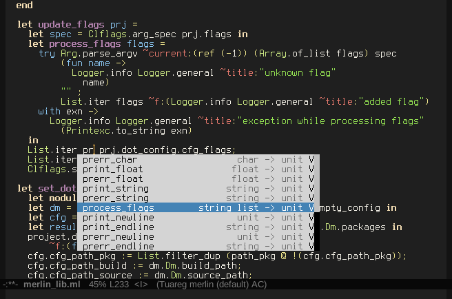

Turn your editor into a full fledged OCaml IDE
On , by
This post is a short presentation of a couple of tools you can use with your editor to have a smoother experience while developing in OCaml. We are working towards making these tools work out-of-the-box with OPAM, and hence will be blogging about them here along with the OPAM tool itself.
At the time of writing, interfaces to these tools are available for Emacs and Vim. Efforts are underway to add support for other editors, including Acme and Sublime Text 3.
Overview
The first tool, ocp-indent, handles the task of indenting your OCaml files. It is an OCaml executable that can be used from the command line or directly from your editor.
The second tool, merlin performs "static analysis" of your source files. The analysis is then used to provide error reporting, source browsing, auto-completion and more.
Ocp-indent for indentation
Most editors provide some kind of indentation "out of the box". However recently a good chunk of the OCaml community has moved to using ocp-indent for fine-tuned indentation:
- it follows language evolution closely, nicely handling recent features,
- it will indent the same even if your co-worker has a different editor,
- it is more flexible, for instance by supporting project-specific styles;
Indeed the indentation behaviour of ocp-indent can be configured through several options, directing how it will behave when encountering different OCaml language constructs. These options can either be set in a configuration file (such as this example configuration) or passed directly as parameters when ocp-indent is invoked from the command line.
Finally, ocp-indent will also recognize a number of common syntax extensions of the OCaml ecosystem and indent them meaningfully, while your editor probably will not.
Merlin for analysis
Merlin enhances your experience editing OCaml code by providing interactive feedback about your code.
Under the hood, it maintains a "code model" of the file you are editing. For other files in your project, it will use the output produced by the compiler; rebuild regularly after editing to keep the model synchronized with your code.
From this code model, it provides a lot of useful features:
- scope/context-aware completion, like IntelliSense;
- querying the type of any expression in the file;
- quick reporting of type and syntax errors, shortening the editing cycle;
- jumping to definitions;
- listing uses of identifiers in the current buffer.

Quick start
Assuming opam is already installed on your system, you just need to invoke
$ opam install ocp-indent merlinto install these two tools.
Emacs. You will have to add opam/share to 'load-path and then load the plugin-specific
file. This can be done by adding the following lines to your .emacs:
(setq opam-share (substring (shell-command-to-string "opam config var share 2> /dev/null") 0 -1))
(add-to-list 'load-path (concat opam-share "/emacs/site-lisp"))
(require 'ocp-indent)
(require 'merlin)For more information about merlin setup, you can look at the dedicated merlin wiki.
Vim & ocp-indent. We recommend using the ocp-indent-vim plugin instead of the default one. It provides interactive indentation "as you type", while the official mode only provides an indenting function to call manually but no passive indentation.
This mode does require vim to be compiled with Python support, while the official one doesn't.
Installing is as simple as cloning ocp-indent-vim and adding the directory to your runtime-path.
Assuming your clone is in ~/my-clone-of/ocp-indent-vim, add this to .vimrc:
set rtp+=~/my-clone-of/ocp-indent-vimVim & merlin. A comprehensive guide to the installation procedure for merlin is available on the dedicated merlin wiki. Once again, if you just want to get started the following lines contain everything you need.
Loading merlin in vim boils down to adding the plugin directory to the runtime path. However as merlin depends on your current opam switch, a more flexible way is to find the current switch and use it as the base directory.
This code does exactly that: it finds the current opam share directory, then adds
the merlin plugin subdirectory to the current runtime path. Add it to your .vimrc:
let g:opamshare = substitute(system('opam config var share'),'\n$','','''')
execute "set rtp+=" . g:opamshare . "/merlin/vim"Integrating with your project
To maintain synchronization with the compiler, merlin needs some information
about the structure of your project: build and source directories, package
dependencies, syntax extensions. This structure can be described in a .merlin file in the root directory of your project.
The .merlin file for the merlin project illustrates the syntax.
The .merlin file will be loaded the next time you open an OCaml file in the editor.
To benefit from code navigation across files you'll also need to turn on
generation of "cmt" files by passing the -bin-annot flag to the OCaml
compiler. You can do this in ocamlbuild by adding the bin_annot tag
into the _tags file with OCaml 4.01 and higher.